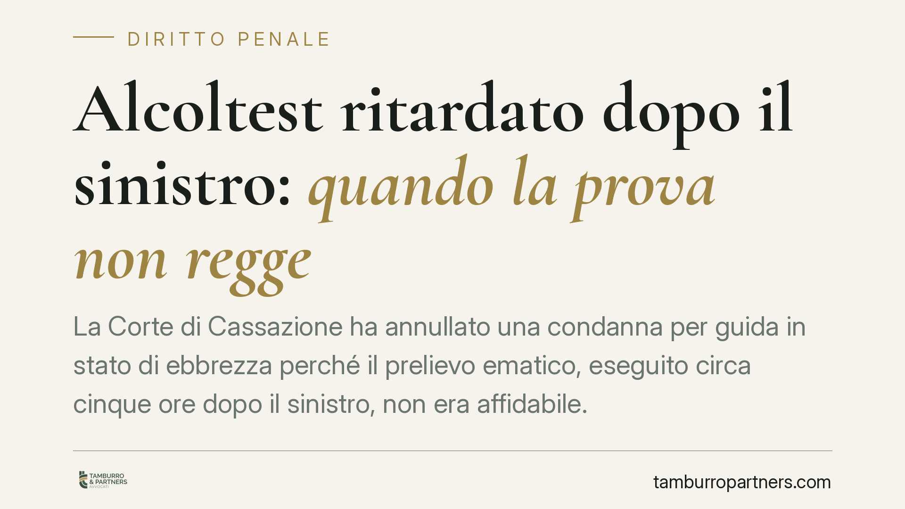

Alcoltest ritardato dopo il sinistro: quando la prova non regge
La Corte di Cassazione ha annullato una condanna per guida in stato di ebbrezza perché il prelievo ematico, eseguito circa cinque ore dopo il sinistro, non era affidabile. Senza un raccordo tra il dato di laboratorio, la curva di Widmark e la sintomatologia rilevata sul posto, il valore che integra la rilevanza penale dell'art. 186 CdS non può dirsi provato.

Il caso
Un automobilista era stato condannato dalla Corte d'Appello di Roma per guida in stato di ebbrezza. L'elemento centrale dell'accusa era un prelievo ematico effettuato presso l'ospedale di Cassino diverse ore dopo l'incidente. La Cassazione ha ritenuto che quel dato, isolato e temporalmente distante dal fatto, non fosse sufficiente a sostenere la condanna.
Il punto non è la validità formale dell'esame, ma la sua capacità dimostrativa: un valore misurato a distanza di ore non fotografa necessariamente il tasso alcolemico al momento della guida.
Inquadramento normativo
L'art. 186 del Codice della Strada articola tre fasce di tasso alcolemico, con conseguenze differenti:
- 0,5–0,8 g/l: illecito amministrativo, non penale (sanzione pecuniaria e sospensione della patente);
- 0,8–1,5 g/l (lett. b): reato, con pena pecuniaria, arresto e sospensione;
- oltre 1,5 g/l (lett. c): reato più grave, con pene aumentate.
È importante fissare il confine: la rilevanza penale scatta da 0,8 g/l. Sotto questa soglia, tra 0,5 e 0,8, si resta nell'illecito amministrativo. Collocare correttamente l'imputato in una fascia piuttosto che in un'altra non è un dettaglio: determina se vi sia reato e quale.
Proprio qui si innesta il problema probatorio. Per attribuire all'imputato una determinata fascia occorre conoscere il tasso al momento della guida, non quello rilevato ore dopo.
La curva di Widmark
L'alcol nel sangue segue un andamento noto, descritto dalla curva di Widmark. Si distinguono due fasi:
- assorbimento: dopo l'ingestione, il tasso sale fino a un picco;
- eliminazione: superato il picco, il tasso cala in modo progressivo e tendenzialmente lineare.
Un prelievo eseguito a distanza di tempo coglie quindi un valore diverso da quello presente al momento del sinistro. A seconda della fase in cui si trovava il soggetto, il tasso al momento della guida poteva essere più alto (se era in eliminazione) o più basso (se era ancora in assorbimento). Senza un calcolo retrospettivo ancorato a dati certi, la ricostruzione resta un'ipotesi.
Il principio di diritto
La Cassazione ha ribadito che il dato di laboratorio non vive da solo. Deve essere raccordato con la sintomatologia coeva: alito vinoso, eloquio alterato, andatura incerta, stato di agitazione, annotati dagli operanti al momento del controllo.
Quando il prelievo è distante nel tempo e manca un riscontro sintomatologico contestuale, il valore ematico non può fondare da solo la condanna. Il giudice non può presumere la fascia di appartenenza: deve motivare, con elementi concreti, perché quel dato dimostri il tasso al momento della guida.
Implicazioni pratiche
Per chi è coinvolto in un sinistro con successivo accertamento alcolemico, la decisione offre un parametro di lettura:
- un prelievo molto ritardato, privo di raccordo con i sintomi rilevati sul posto, è contestabile;
- l'intervallo temporale tra fatto e prelievo diventa un elemento difensivo da documentare;
- l'assenza di annotazioni sulla sintomatologia nel verbale indebolisce l'impianto accusatorio;
- la collocazione in una fascia piuttosto che in un'altra può incidere sulla stessa esistenza del reato.
Non si tratta di una scappatoia automatica: ogni caso dipende dai dati concreti, dalla distanza temporale e dalla qualità degli accertamenti. Ma la sentenza conferma che il valore numerico non è un dogma intangibile.
Cosa fare in concreto
- Conserva la documentazione sanitaria: orario del prelievo, referto completo, cartella del pronto soccorso.
- Annota l'intervallo temporale tra il sinistro e l'esame: quando è significativo, può essere opportuno valutarne l'incidenza con un difensore.
- Richiedi copia del verbale degli operanti e verifica se e come sia descritta la sintomatologia al momento del controllo.
- Non sottoscrivere dichiarazioni affrettate sul consumo di alcol: incidono sulla ricostruzione della curva di Widmark.
- Rivolgiti tempestivamente a un legale: il margine difensivo si costruisce sui dettagli dei primi atti.
---
Contributo informativo a cura di Tamburro & Partners Avvocati – Avv. Giuseppe Tamburro. Non costituisce parere legale.
Ogni condominio ha una storia a sé.
Se gestisci un'amministrazione e vuoi un confronto su una specifica questione condominiale, scrivi allo studio. Ti rispondiamo entro un giorno lavorativo.